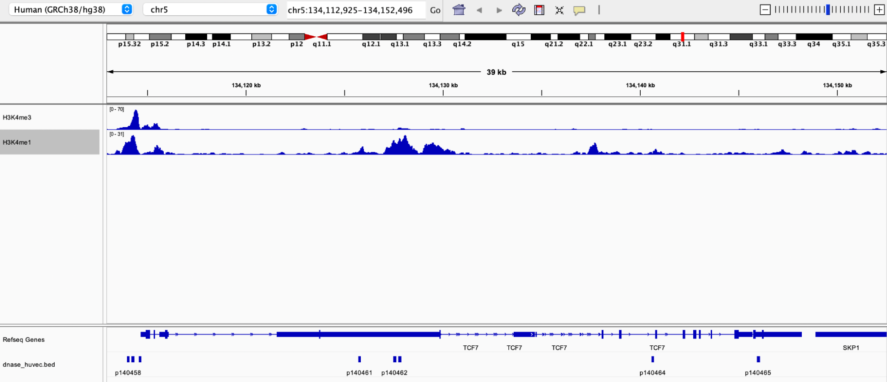

BED and WIG Files
BED (Browser Extensible Data) Files: Stores information about genomic intervals i.e., exons (contains start and end positions)
WIG (“Wiggle”) Files: Stores information about each genomic location i.e., chromatin modification data, as regions would have different methylation levels
Both file types can be displayed genome browsers.
Example 1: Three ENCODE tracks from region chr5:134000000-134250000 of hg38 were retrieved using the UCSC Table Browser
- DNase HS (hypersensitivity), table HUVEC Pk (output a BED file)
- Layered H3K4me3, HUVEC Cells (output a WIG (data points) file)
- Layered H3K4me1, HUVEC Cells (output a BED file)
Output demonstrating the TCF7 gene and the 8 closest DHS regions in IGV 
Based on the H3K4me3 track, the TCF gene appears to be expressed in HUVEC cells, as peaks in H3K4me3 are associated with the promoter region of the gene.
BEDtools
BEDtools are tools used for genetic data manipulation and include functions such as joining, subtracting, and intersecting files. BEDtools are available through Galaxy and can be used from the command line.
Analysis of Overlapping Regions
Example 1: BEDtools - Interval Manipulation in Galaxy
BED files containing exons and CpG regions, respectively, in chromosomal region 5q31, were analyzed in Galaxy for overlapping regions between the two genomic features.
Results: 542 unique exons intersect a CpG region, and 4,296 unique exons do not intersect a CpG region 200 unique CpG regions intersect an exon, and 45 unique CpG regions do not intersect exons
Galaxy Workflow

Example 2: BEDtools command-line
BED files containing active H3K4me3 states and coding exons, respectively, in chromosome 20, were analyzed using bedtools intersect on the command line for overlapping regions between the two genomic features.
Results
10 unique H3K4me3 regions intersect a coding exon
bedtools intersect -u -a hs_chr20_H3K4me3.bed -b hs_chr20_refseq.bed
245 unique H3K4me3 regions do not intersect a coding exon
bedtools intersect -v -a hs_chr20_H3K4me3.bed -b hs_chr20_refseq.bed
(first few rows)